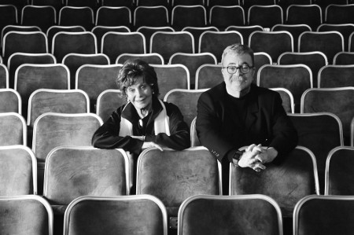

“Anne yemeğinin tadı hiçbir şeyde yoktur”
Çocukluğunuzun mutfağından neler hatırlıyorsunuz?
Bol bol yediğiniz kuru fasulye, pilav ve mercimek çorbasını anımsıyorum. Benim çocukluğumda hayat zordu, kimsede para yoktu. Bizim ailemiz de ekstra sıkıntılar yaşayan bir aileydi. Çünkü babam, annemle evlendiği için Hariciye’den ayrılmak zorunda kalmıştı. Bu ona çok da dokundu galiba, başka türlü bir içki ahbaplığı edindi. Evin idaresinde annem devreye girdi; en ucuz ama en lezzetli yemekleri yaptı bize.
İngiliz annenizin mutfakla alakası nasıldı?
Çok güzel yemekler yapardı, sonradan Türk mutfağını da çok iyi öğrendi. Çok lezzetli bir eli vardı, ama tabii her çocuğa annenin yaptığı yemek çok lezzetli gelir. Ben fazla yemek falan yapmazdım, haşlanmış patatesleri bir parçacık yağda çevirip aralarına yumurta kırardım. Kızım hep bu yemeği hatırlar ve “En çok sevdiğim yemek, annemin yaptığı patatesli yumurta” der. Annelerin yaptığı yemek hiçbir yemeğe benzemez.
Anneniz İngiliz mutfağından yemekler de yapar mıydı?
Yapardı, mesela dumpling diye bir yemekleri vardı onların; fukara sofrası için çok bereketli bir yemekti. Bulduğu kadar sebzeyi tencereye koyar, içine de hamurdan topaklar yapıp atardı. Sebzelerle birlikte pişen o yemeğe bayılırdım.
Babanızın mutfakla arası nasıldı?
Babam çok güzel salata yapardı, inanılmaz süslerdi. Babamın mutfağa girmesi benim için bayramdı. Babam çok tertipli, düzgün bir adamdı. Mutfak tertemiz olmazsa hiçbir iş yapamazdı. Ama annem öyle değildi, dağınık bir kadındı. O bir an önce çocuklarının karnını doyurmaya bakardı. Babamda başka türlü bir estetik vardı. Bir salata yapardı resim gibi, kesilmesi, doğranması, o incecik naneler, maydanozlar, dereotları falan; benim bayramım olurdu babam mutfağa girdiği zaman.
Çocukluğunuzun öfkeli bir evde geçtiğini okudum...
Öfkeli değil, bizim evimizde ne olursa olsun aşk vardı. Bu çok önemliydi ama yokluk, öfkeye sürükleyen bir şeydi elbette ki! Ama öfkede de aşk vardı, kızgınlık değildi o; çaresizlikten kaynaklanan bir şeydi.
O aşkın, o öfkelerin, o çaresizliğin içinde yemeğin yeri neydi?
Herkes ayrı saatte yemek yerdi. Bütün aile cumartesi pazar sabahları toplanırdı. Eğer babam evdeyse, içkisizse, vakitli kalktıysa, sobayı temizleyip ortalığı sıcacık yaptıysa, o zaman her şey harika olurdu; o günlerin tadını hiç unutmam.
Sizin mutfakla aranız nasıl?
Ben adeta kullanılmamış mutfağı seviyorum, yani bir şey yaptığınız zaman hemen temizleyeceksiniz. Onun için bir şey yaptığım zaman hemen temizliyorum. Annem bir şey pişirdiği zaman mutfak darmadağınık olurdu. Kayınvalidem de öyleydi; sebzeleri gazete kâğıtlarının içinde soyar, kıymayı kendi yağlı kâğıdının içinde yoğururdu. Ama inanılmaz bir lezzet vardı elinde, kahkahası hiç eksik olmazdı, dünya güzeli bir kadındı, nur içinde yatsın.
Siz hiçbir şey alamadınız mı onlardan?
Alamadım da, almak da istemedim zaten. Dediğim gibi, ben temiz mutfak seviyorum, o bakımdan soğuğum. Ama zorunlu olarak yemek yaptım tabii ki. Hem de uzun yıllar... En çok kızım severdi yaptığım yemekleri; en iyi yaptığım yemek de söylediğim gibi patatesli yumurtaydı.
Kuru fasulyeyi, pilavı yapmasını bildiğinizi söylediniz; hâlâ yapıyor musunuz?
Hayır, yapmıyorum ama gerekirse yaparım. Öncellikle küçük fasulye olmasına dikkat ediyorum ve ıslatıyorum. Islatmanın ve pişirmenin mutlaka bir raconu olması gerekiyor, fasulyeler fazla haşlanıp patladığı zaman sevmiyorum. Fasulyeyi sade severim, domatesli yaparım, salça çok sevmem. Yanına da pirinç pilavı. Annem bulgur pilavını da çok güzel yapardı. Yapmasını bilmiyorum, ama yemesini iyi beceriyorum.
Bu enerjinizi ve zindeliğinizi özel bir beslenmeye mi borçlusunuz?
Çok yemek yemeye vaktim olmuyor benim, ağır yemekler sevmiyorum, çok yiyorum aslında iyi yiyorum, iyi besleniyorum herhalde tiyatrodaki koşturmaca insanı enerjik tutuyor. Yani sanatta o güç vardır, o dinamizmi hep taşımanız lazım; kafanızda, bedeninizde, yüreğinizde.
En çok hangi yemekleri seversiniz?
Çorbanın her türlüsünü çok severim, çünkü yemesi kolay. Sebze çorbasını, mercimek çorbasını, artık yemeklerden yaptığım çorbaları, tel şehriyeli tavuk suyu çorbasını severim. Daha da önce söylediğim gibi, kuru fasulye ve pilavı da severim.
Kimlerle nerede yemek yemek çok hoşunuza gidiyor?
Aç insanlarla, yani yemeğin tadını çıkaran insanlarla yemek yemek hoşuma gidiyor. Onların keyif almasını görmek beni çok mutlu ediyor. Yemek yemek zaten başlı başına bir keyiftir. Çok gösterişli olmayan, temiz ve lezzetli yemekleri olan yerlere gitmeyi tercih ediyorum. Ama çok fazla lokantaya gitmem, birisi davet ederse giderim.
Eve gelen konuklarınıza yemeği kim yapıyor?
Benim doğurmadığım Esma adında bir kızım vardır, ama doğurmuşum kadar benimle beraber olmuştur. Esma’nın kocası da tiyatroda benim sağ kolumdu, ama onu kaybettik. Ondan iki torunum var; onlarla iftihar ediyorum, onlarla hayatım güzelleşiyor. Esma’nın eli muhteşemdir, Kastamonuludur. Bütün yemekleri çok güzel yapar. Esma yaptığında ne olursa olsun yerim. Misafir geldiği zaman Esma mutfağa girer tabii ki.
Yemekte içki içer misiniz?
Bayılırım. Şarap içerim ama bazen rakı içmekten de çok büyük keyif alırım. Özellikle de meyhane tarzı bir balıkçıya gittiğimiz zaman rakı-balık keyfini yaşamak isterim. Şükran varken haftada bir, on günde bir giderdik; şimdi gitmiyorum, ama gitmeyi özlüyorum. Oyun öncesi ağzıma içki koymam, öğlen ağzıma içki koymam, bu bende bir kuraldır. Kızımın halası evlenirken bir yudum şarap içtim, sadece bir yudum, onunla ilgisi yok ama akşam oyunda bir satır atladım. O gün yemin ettim, oyundan önce ağzıma içki koymam.

Oyun bitti, perde kapandı; o zaman ne içiyorsunuz?
Genelde bir kadeh şarap içiyorum, insanı mutlu eder, rahatlatır. Ama eğer ertesi gün işim yoksa, akşam da boşsam rakıyı çok severim.
Müşfik Bey’le yemek yiyip içki içtiğiniz oluyor mu?
Hayır, birlikte içki içmiyoruz. Müşfik içkiyi uzun yıllardan beri tamamen bıraktı. 30 seneden beri ağzına hiç içki sürmüyor, bir karar aldı ve bu kararını uyguladı; bu bakımdan da kardeşime hayranlık duyuyorum. Ben alkolik bir aileden geliyorum, babam çok içerdi.
Babanızın içkiye düşkünlüğü sizi içkiden soğuttu mu?
Hayır, soğutmadı. Ben ölçülü olmak kaydıyla içki içmeye hiç karşı değilim. Oyunculukta ilk öğrendiğimiz şey ölçüdür, bu ölçü aldığımız her role göre de değişiyor. Hayattaki ölçülerimiz de, üstlendiğimiz görevlere göre değişiyor zaten.
Oyundan önce mi, sonra mı bir şeyler yersiniz?
Oyundan önce bir şey yemem ama bana enerji verecek limonlu, ballı su içerim. Bazı aykırı arkadaşlarım da yok değil, “Ben yemek yemeden sahneye çıkamam” diyenler de var; bu bir alışkanlık meselesi. Oyundan sonra ise sadece çorba içerim.
Turnelerde nasıl beslenirsiniz?
Turnelerde yöre yemeklerini seçiyoruz. Öğlen bolca yiyoruz, gece bir çorba içip yatıyoruz. Bazen yörede tanıdık bir grup oluyor, dostlarımız mutlaka ikramda bulunuyorlar. Özellikle Gaziantep’te bu davetler bir ziyafete dönüşüyordu. Bunlar eskiden olurdu, şimdi onlarda yaşlandı veya gruplar dağıldı.
Sokak yemekleriyle aranız nasıl?
Yememeye çalışıyorum, ama yediğim zaman çok lezzetli olduğunu fark ediyorum. Oyun çıkışı bazı arkadaşlarla çok nadir sokak yemeği yeriz.
Et mi, balık mı, hamur işi mi?
Balık birinci sırada yer alır her zaman, her tür balığı severim. Çocukluğumda uskumruyu çok severdim; en ucuz balık oydu bol yerdik, o yüzden balık yeme alışkanlığım var. “Denizden babam çıksa yerim” derler ya, o şekilde benim sevgim. Barbunyayı ve tekiri tavada severim.
Abur cuburu sever misiniz?
Evet, sanıyorum en zararsızı leblebi, onu yerim. Dolapta hep bir kavanoz leblebi vardır, ayrıca çok faydalıdır. Sağlık açısından tuzsuz yerim, ama aslında tercihim tuzludan yana.
Gece buzdolabından bir şeyler tırtıklar mısınız?
Bazen acıkır, yemek isterim, fakat tuhaf bir huyum var: Bir şeyi yiyip yatamam. Dişlerimi çok iyi temizlemem lazım, çocukluğumdan beri bu böyledir. O yüzden eğer dişimi fırçalamaya üşeneceksem hiçbir şey yemem. O yüzden buzdolabından bir şey çalmam.
Tatlıyla aranız nasıl?
Bayılırım, her türlü tatlıyı severim. Hamur tatlılarını da, sütlü tatlıları da severim. Vıcık vıcık kremalı pastalardan çok hoşlanmam, ama iyi bir baklavaya bayılırım. Peyniri sünen sıcak künefeyi, kadayıfı da çok severim.
Dünya mutfaklarıyla aranız nasıl?
Benim her mutfakla aram iyidir. Dünyayı epeyce dolaştım, Allah’a şükür hiçbir yerde yemek sıkıntısı çekmedim. Çin’e gitmedim, ama Çin mutfağını uzaktan uzağa seviyorum. Buradaki Çin lokantalarına arada sırada gidiyorum.
Okuyucularımıza bir günlük yemek serüveninizi anlatır mısınız?
Güzel bir kahvaltıyı seviyorum, fakat güzel bir kahvaltıya vakit ayıramıyorum. Onun için genellikle bir kahve, bir de mısır gevreği yiyorum. Öğlen çoğu zaman bir çorbayla geçiştiriyorum. Akşam oyun var; oyun sonrası tekrar bir çorba içiyorum. Günlük yemek serüvenim gördüğünüz gibi pek heyecanlı değil. Çorbayla yaşıyorum galiba.
Konusu yemek olan film, kitap ilginizi çekiyor mu?
Hem de çok. Evde birçok yemek kitabı var zaten. Kızım çok meraklıdır, hem doğurduğum hem doğurmadığım kızlarım çok meraklılar. İkisi baş başa kaldıkları zaman saatlerce yemeklerden bahsedebiliyorlar. Kızım arada bana yemek yapar; yemek yapmakta ustadır, sofraya meraklıdır.
Çocukluğunuzdan bugüne yemek alışkanlığınızda değişiklik oldu mu?
Pek bir şey değişmedi galiba. Aslında başladığı gibi gidiyor. Biz balık yiyerek büyüdük, yine balık yiyorum. Küçükken kuru fasulye ve pilav yiyorduk, yine aynısını yiyorum, hem de çok severek.
Ailece toplanıp yemek yediğiniz oluyor mu?
Bazen oluyor. Balık yapıyoruz, o zaman hep beraber yapıyoruz, herkesin eli değiyor. Biri salata yapıyor, biri balıkları kızartıyor, diğeri başka bir şey hazırlıyor. Ama fırındaki ustalık, Esma’ya ait, Esma evimizin baş aşçısı sanki.
Müşfik Bey yemek yapar mı?
Müşfik iyi yemek yapar, güzel kuru fasulye ve pilav pişirir. Gördüğünüz gibi laf dönüp dolaşıp hep kuru fasulye ve pilava geliyor. Bu yemeği ailece ne kadar sevdiğimizi anlayın. Bizde bir Fransız kalırdı, o fasulyeye “fukara mızıkası” derdi.
Beslenmeyle ilgili önerileriniz var mı?
Herkes sevdiği, özlediği yemeği bir ölçü dahilinde yiyebilmeli. Hiçbir şeyi özlememeli insan. Ama hem sağlık, hem kese açısından ölçülü olmalı.
(27 Mart 2011)